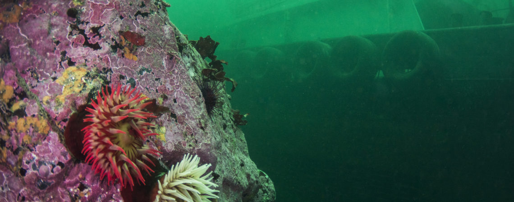
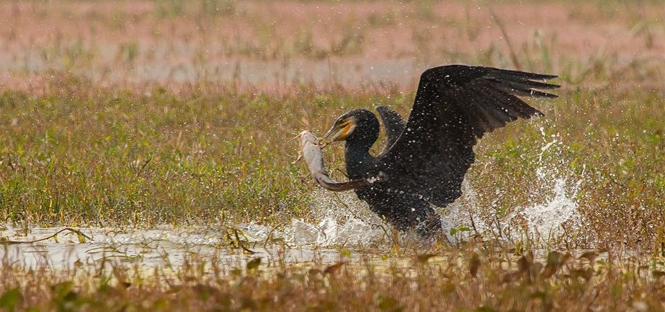
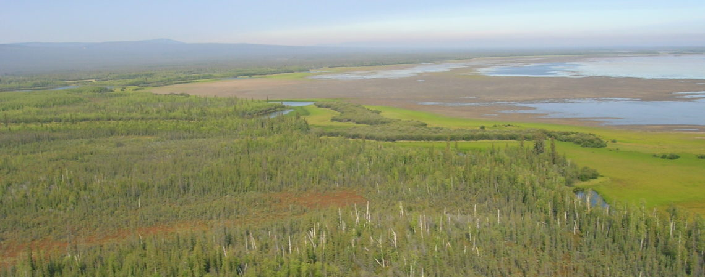
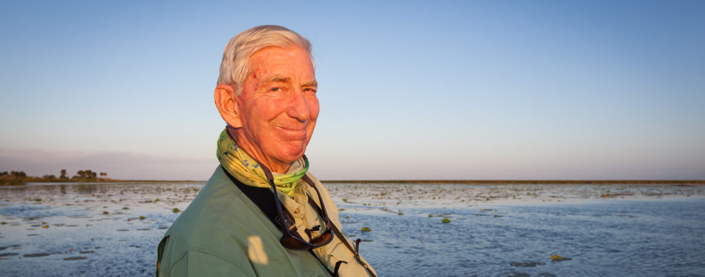
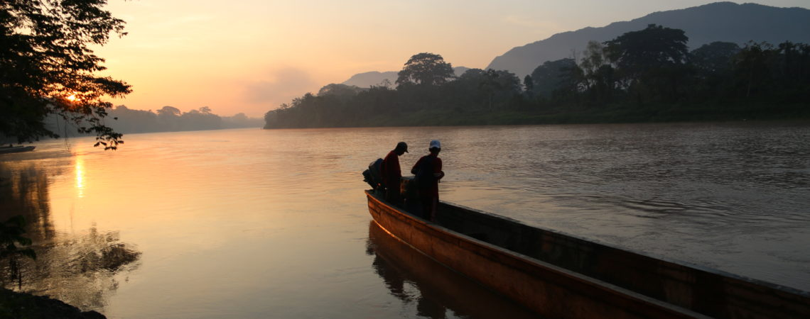
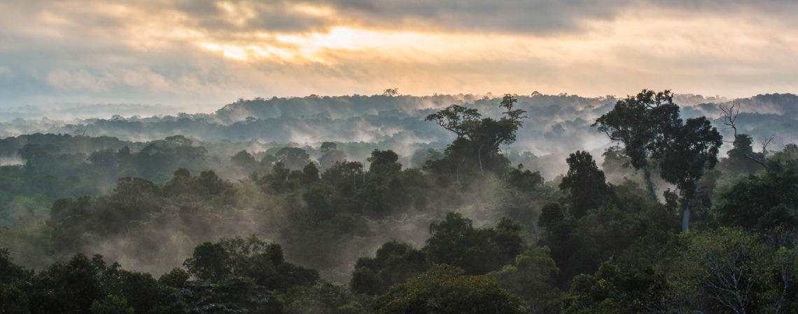

Making the Unseen Seen: The True Cost of Oil Spills

July 20, 2018
Likes: 2
Comments: 0
In the dark, early hours of October 13th, 2016, the Nathan E. Stewart tugboat and articulated barge surged south through
the vast, turbulent waters modernly known as Seaforth Channel in the heart of Canada’s Great Bear Rainforest, in Heiltsuk
First Nation territories. The American-based tug (also referred to as the “NES”) was returning to Vancouver…
Top 25: Wild Birds with Spectacular Catches

July 20, 2018
Likes: 8
Comments: 0
This week we are allowed a unique insight into the lives of birds that hunt. When we think of birds hunting, we typically
picture a raptor with ferocious talons and a sharp beak to tear apart prey. But in fact many birds will hunt opportunistically.
In this week’s Top 25 we feature a wide range…
Can We Protect the Last Intact Forests of the World in the 21st Century?

July 18, 2018
Likes: 4
Comments: 5
We are now at a point in the course of human history where there are only a handful of places on Earth that are not
severely altered by the footprint of large-scale industrial activities. Those within parts of the Earth where trees
are dominant are termed “intact” or “primary” forests. A few weeks ago I…
A Tribute to Environmentalist Nathaniel Reed

July 17, 2018
Likes: 2
Comments: 5
This article is brought to you by the International League of Conservation Photographers (iLCP). Read our other articles
on the National Geographic Voices blog featuring the work of our iLCP Fellow Photographers all around the world. On
July 11th Nathaniel ‘Nat’ Reed, a great environmental advocate, passed away at age 84. Mr. Reed had many accomplishments
and tirelessly…
Keeping Carnivores, Connectivity, and Culture Intact in Mesoamerica’s Moskitia

July 17, 2018
Likes: 12
Comments: 1
By John Polisar In early 2017, I participated in an ecological survey led by Conservation International to assess the
biological attributes of archaeological site in Honduras known as Ciudad Blanca, or the Lost City of the Monkey God.
The area was so remote that we were helicoptered in. We walked through rivers and atop ridges,…
Mapping the Critical Role of Indigenous Peoples in Global Conservation

July 16, 2018
Likes: 5
Comments: 2
By Stephen Garnett and James Watson Hazda, Aranda, Orang Asli, Yanomami and Cherokee – Indigenous Peoples have many
names around the world. With such diversity in names and cultures, some people might not be aware of the many things
that Indigenous Peoples share. One is deep cultural attachment to their land and sea – an…
Researchers, conservationists, and others share stories, insights and ideas about Our Changing Planet, Wildlife & Wild Spaces, and The Human Journey. More than 50,000 comments have been added to 10,000 posts. Explore the list alongside to dive deeper into some of the most popular categories of the National Geographic Society’s conversation platform Voices.
Recent comments